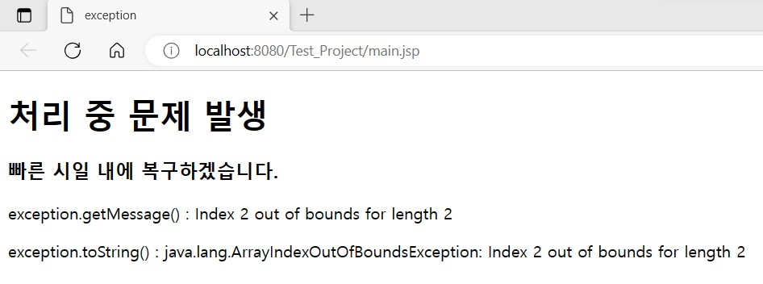

개념
-
isErrorPage 속성
- JSP 페이지가 오류를 처리하는 페이지인지 true 또는 false로 지정하는 속성
- 지정하지 않으면 기본값이 false이고 필요하면 true로 지정
- <%@ page isErrorPage="true" %>를 작성
- isErrorPage를 true로 지정하면 내장객체라 부르는 exception 변수를 사용하여 에러를 처리
-
errorPage 속성
- JSP 페이지에서 발생한 오류를 처리하는 JSP 페이지를 기술하는 방법
- <%@ page errorPage="오류 처리 파일명" %>를 작성하여 사용
- 오류를 처리하는 전담 JSP 페이지를 지정
- 이 시스템을 사용하는 사용자에게 일관성 있게 오류 처리를 해줄 수 있어 시스템의 신뢰성을 높일 수 있는 장점
예제 코드
| exception.jsp | main.jsp |
|---|---|
|
|
|
이제 main.jsp를 실행하면 오류가 발생하여 exception.jsp가 화면에 나올 것이다.
